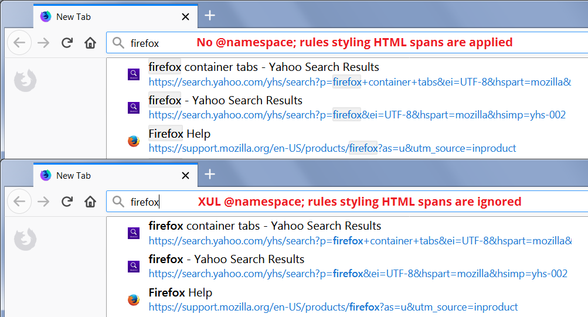

Generally speaking, there are two ways to incorporate style recipes into userChrome.css:
- Inline: You can paste new style recipes one after the next. Note that in the case of a conflict between different rules that otherwise have equal precedence, the last rule wins. In order to keep track of what is going on the file, it's a good idea to add comments above each different recipe explaining what it is for and including the URL where you found it, in case you have questions or need to check for updates later. In CSS, comments look like this:
/* This is a comment! */
Note:
- Be careful not to include comments within other comments; that doesn't work.
- If you include any
@namespacelines, place them at the top of the file and do not repeat them at other points in the file. (However, I recommend you do not include namespaces, as discussed in the next section.) - A good editor that recognizes CSS will color comments differently from other parts of the file, making it easier to spot them. For suggestions on editors, see: Tools.
- Imported Files: When Firefox reads userChrome.css at startup, it also will load other files you reference in userChrome.css. For example, imagine that you have a set of rules for the address bar that runs a couple of screens. In order to simplify working with userChrome.css, you could save your address bar rules in a separate file inside your chrome folder. Let's call it addressbar.css. Then at the very top of your userChrome.css file, you can import that file using this line:
@import url("addressbar.css") screen;Note:
- If you include any
@namespacelines, place them after your @import lines. - When you use the Style Editor in the Browser Toolbox, userChrome.css and addressbar.css will have separate entries in the list of loaded style sheets in the left column. (More about this useful tool can be found in the MDN article Firefox Developer Tools: Browser Toolbox.)
- If you include any
You may want to use a combination of those approaches, using @import for large complex style recipes, and pasting short ones directly into your userChrome.css file. This video demonstrates both approaches:
Demo - Editing userChrome.css on Vimeo
Is there only XUL? To @namespace or Not to @namespace.
In older articles about userChrome.css, you will read that you must include this line of code at the top of your file:
@namespace url(http://www.mozilla.org/keymaster/gatekeeper/there.is.only.xul);
But is that really true? What does it do?
tl;dr - You do not need to use it, and if you do, there might be some unexpected glitches.
XUL stands for XML User Interface Language (according to MDN), and has long been the foundation of Firefox's user interface code. XML looks similar to HTML in that it consists of tags, but you won't find tags like toolbar, menubutton, or richlistitem in any HTML tutorials. In fact, today's Firefox user interface is a mix of XUL tags and HTML tags, and over time, the interface will gradually use more and more HTML, and less and less XUL.
Here's the problem: when you specify the XUL namespace, style rules for non-XUL elements such as HTML elements are ignored. For example:

Recommendation
It probably is possible to write style rules to apply to HTML elements when only the XUL namespace is specified, but it's simpler not to create this situation in the first place and omit all mention of namespaces. What harm might be done by omitting the XUL namespace? Some of your user interface rules might have unintended consequences beyond the confines of the user interface, for example, in the developer tools panel. However, those issues can be avoided by using an @-moz-document rule to limit how your style recipes are applied:
@-moz-document url(chrome://browser/content/browser.xul) {
/* Your style rules for the user interface go here */
}
Also, if you find yourself in a situation where one style recipe needs the XUL namespace, but that namespace causes problems with another, you can put them in separate files and use the @import method described earlier on this page to apply both files.
Will your userChrome.css file do more as an AGENT_SHEET?
If you've viewed style rules on userstyles.org or other sites, you may have seen this comment line at the beginning of some older user styles:
/* AGENT_SHEET */
You'll also see that in contemporary style recipes, including files under CustomCSSforFx. What did or does it do? Should you use it?
Not all elements can be styled in a "user sheet". Normally, rules in userChrome.css will override built-in rules, particularly if your rules are declared !important. However, some elements, such as the "native anonymous elements" that make up scroll bars, are off limits to user sheets and can only be overridden by an agent sheet. Stylish 2.11 and earlier could use a legacy function available to extensions to load a user style as an agent sheet (documentation archived at Using the Stylesheet Service). The WebExtensions API has nothing like that, or you would not be reading this site.
Firefox has always loaded the userChrome.css file as a user sheet regardless of comments in the file, and this is very unlikely to change. Therefore, adding /* AGENT_SHEET */ at the top does not make any difference. If you have observed otherwise, please tell me how you did it.